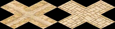
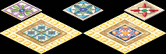

Road


The Road is the foundation of city logistics. Every building that spawns walkers — service providers, traders, priests, tax collectors — requires road access, and all walkers travel exclusively on roads.
Roads are draggable: click and drag to lay a chain of tiles at once. The game auto-routes the cheapest path between the start and end tile. Roads placed in high-desirability areas or near fountains automatically display a paved stone appearance. Placing a Plaza tile on an existing road gives a permanent decorative upgrade and a small desirability bonus.
A companion building, the Roadblock, is placed on any road tile to control which categories of roaming walkers are allowed to pass, letting you shape service coverage without demolishing roads.
Road
- Cost (Normal)
- 5 Db
- Cost by difficulty
- VE 1 · Easy 2 · Normal 5 · Hard 10 · VH 15
- Draggable
- Yes — auto-routes between start and end
- Fire / Damage risk
- None
Plaza
- Cost (Normal)
- 10 Db
- Cost by difficulty
- VE 3 · Easy 5 · Normal 10 · Hard 15 · VH 20
- Placement
- On existing road tiles only
- Fire / Damage risk
- None (fire-proof, damage-proof)
Overview
Ancient Egyptian settlements were crisscrossed by paths of packed earth, worn smooth by the feet of workers, merchants, and priests. Major temples and administrative centres were linked by processional avenues paved with stone, flanked by sphinxes and obelisks. The Nile itself served as the primary highway, but inland roads carried the daily flow of goods, food, and people between fields, workshops, and homes.
In the game, the road network is the circulatory system of your city. Walkers from service buildings — architects, fire marshals, physicians, bazaar traders, tax collectors, priests, and entertainers — all roam the streets. If housing has no road access, no walker can reach it; the house will devolve. If a production building has no road access, its cartpushers cannot leave with goods. Roads are not optional infrastructure: a city without a connected road network cannot function.
Mechanics
Road network connectivity
Every game tick the engine scans the map and assigns a network ID to each connected cluster of road tiles using a BFS flood-fill. All buildings and figures track which network they belong to. A Granary on network 3 is invisible to a Bazaar buyer on network 7 — even if they are two tiles apart — because there is no road linking them.
Building A — road — road — road — Building B → same network, walkers can travelBuilding C — (gap) — road — Building D → different networks, walkers cannot travel
The engine specifically tracks the largest road networks for efficient routing. When you place a building that needs to reach distant storage buildings or housing, always verify it is on the same connected network.
Walker types and roads
There are two walker types relevant to road layout:
- Destination walkers (e.g. Bazaar Buyer, Cartpusher) — pathfind directly to a target building. They always find the shortest road path. A Roadblock does not stop them.
- Roaming walkers (e.g. Bazaar Trader, Physician, Tax Collector) — have no fixed destination. At each intersection they choose a direction randomly. Their coverage depends entirely on road layout. A Roadblock can redirect or block them.
Because roaming walkers choose randomly at intersections, a long straight road with no side branches gives very predictable linear coverage. A dense grid gives unpredictable coverage — walkers may double back and miss streets entirely. Plan road layouts deliberately: use loop roads so walkers always find a forward path, and use Roadblocks to prevent them from wandering into zones you do not want served.
Building road access
A building is considered to have road access if at least one of the tiles adjacent to its footprint is a road tile. Larger buildings (2×2, 3×3, 4×4) only need one adjacent road tile — walkers spawn from the tile closest to that road. Buildings with no adjacent road tile are shown with a warning in their right-click panel and cannot spawn any walkers.
Paving & Plaza
Automatic paving
A dirt road tile automatically displays a paved stone appearance (without extra cost) when either condition is met:
- The tile's desirability is above 4, or
- The tile's desirability is above 0 and the tile is within a Fountain's service range.
Paving is purely visual — it does not affect walker speed or routing. It does give a clear indication that the surrounding neighbourhood has high desirability, which correlates with housing evolution potential.
Plaza
Placing a Plaza tile on any existing road tile permanently upgrades its appearance to the decorative plaza look and grants +4 desirability at that tile (fading over 2 tiles). Plaza tiles are fire-proof and damage-proof. They are most useful for:
- Creating decorative main avenues through housing districts to push desirability over evolution thresholds.
- Bridging a gap between a high-desirability zone and a nearby Bazaar or service building to cross the building's upgrade threshold (e.g. Bazaar desirability ≥ 30).
- Providing a visible landmark for city layout planning.
Plaza cannot be placed on empty ground — place a Road tile first, then the Plaza on top of it. Demolishing a Plaza tile returns the underlying road.
Floodplain & Canals
Floodplain roads
Roads can be placed on floodplain tiles, but with restrictions:
- A floodplain road tile is blocked during inundation — when the Nile floods and the tile becomes water, walkers cannot traverse it. Plan alternative routes for the flood season.
- A road can cross a floodplain edge (non-floodplain tile adjacent to exactly one floodplain tile), but a road tile cannot be placed if it would be surrounded by floodplain on more than one cardinal side — the terrain connection rules prevent it.
- Floodplain roads use special dirt-road images that blend with the earthy floodplain terrain.
Road under canal
An Irrigation Ditch (canal) can cross over a road tile. The game checks whether a road can pass under a given canal tile (map_can_place_road_under_canal) and renders a combined road+canal image when both are present on the same tile. This lets you run canals across major roads without severing the road network.
Tips
- Always connect every building to the same road network. A disconnected building — even one tile away from a road — cannot function. Use the road overlay or trace the road manually to verify connectivity.
- Avoid dense grids for service buildings. A bazaar trader or physician on a 4-way intersection has a 25 % chance to go back toward where she came from. A linear road or a simple loop gives much more reliable coverage.
- Use Roadblocks at the entrance to housing blocks to prevent industrial or military walkers from entering residential streets, and vice versa. One Roadblock per road leading into the block is usually enough.
- Roads on the floodplain are cut off during inundation (roughly Month 4–6 depending on the mission). If critical service buildings rely on floodplain road crossings, add an alternative dry-land route before flood season.
- Irrigation Ditches can cross over roads, so you do not need to break your road grid to accommodate canal irrigation. Plan canals after roads, not before, to keep layouts tidy.
- Plaza tiles increase the desirability of adjacent tiles by up to +4. Lining your main avenue with Plazas is often the cheapest way to push a housing cluster over an evolution threshold compared to placing multiple statues.
- If a roaming walker is not reaching a house, check for dead ends. Walkers avoid dead-end roads after the first visit and may never return. Close the loop or add a Roadblock to redirect them.
Developer reference
All paths relative to the repository root.
Building config — src/scripts/buildings.js
src/scripts/buildings.js defines building_road and building_plaza. The Roadblock config is documented on the Roadblock page.
building_road {
animations {
preview { pack:PACK_TERRAIN, id:33 }
base { pack:PACK_TERRAIN, id:33 }
}
building_size : 1
cost [ 1, 2, 5, 10, 15 ] // VE · Easy · Normal · Hard · VH
planner_update_rule {
is_draggable : true
}
}
building_plaza {
animations {
preview : { pack:PACK_GENERAL, id:168 }
base : { pack:PACK_GENERAL, id:168 }
},
planner_update_rule { is_draggable : true }
fire_proof : true
damage_proof : true
meta : { help_id: 80, text_id: 137 }
building_size : 1
cost : [ 3, 5, 10, 15, 20 ]
desirability : { value[4], step[1], step_size[-2], range[2] }
}C++ implementation — src/building/building_road.h / .cpp
src/building/building_road.h declares building_road (inherits building_impl). Key static methods:
set_road(tile2i)— addsTERRAIN_ROADflag to the tile and refreshes surrounding tile images; returnstrueif the tile was newly set.is_paved(tile2i)— returnstrueif desirability > 4, or (desirability > 0 && within fountain range). This drives the visual switch between dirt and stone road images.set_image(tile2i)— selects the correct image variant for a road tile based on adjacent terrain (auto-connects to neighbours, handles canal-over-road, floodplain, plaza).
The nested preview struct implements the drag-to-place planner:
can_construction_start()— callsmap_routing_calculate_distances_for_building(ROUTED_BUILDING_ROAD, start)to verify a route exists.construction_update()/construction_place()— useplace_routed_building()to lay tiles along the auto-routed path.ghost_preview()— draws red ghost on blocked tiles (water, non-clearable terrain, inundated floodplain, out-of-money), green/neutral ghost otherwise.
Placement is blocked (red ghost) when the player is out of money, the tile is water, or the tile is an inundated floodplain. Roads can be placed on non-inundated floodplain and over canals.
Road network — src/grid/road_network.cpp
src/grid/road_network.cpp implements the connectivity flood-fill. city_map_t::update_road_network() scans every tile once per update cycle:
// Assigns network_id to every connected road cluster via BFS
for each unvisited road tile:
size = mark_road_network(tile, network_id++)
add_to_largest_road_networks(network_id, size)
// BFS kernel — 4-directional, max 1000 tiles in queue
mark_road_network(grid_offset, network_id):
flood-fill using map_routing_citizen_is_passable()
marks tile as network_id in road_network gridThe queue limit is 1 000 tiles (MAX_ROAD_QUEUE). Very large connected road grids are handled correctly; the limit only affects queue depth per iteration, not total reachability. The engine tracks the largest networks so that buildings preferentially connect to the biggest network when multiple are reachable.
Road access API — src/grid/road_access.h
src/grid/road_access.h exposes the building-to-road connectivity checks used throughout the codebase:
map_has_road_access(tile, size)— returns true if any tile adjacent to the N×N footprint is a valid road tile.map_get_road_access_tile(tile, size)— returns the specific adjacent road tile (used to spawn walkers at the right edge).map_closest_road_within_radius(tile, size, radius)— finds the nearest road tile within a given search radius; used by buildings that spawn destination walkers.map_get_adjacent_road_tiles_for_roaming(grid_offset, road_tiles, permission)— fills an array with the adjacent road tiles a roaming walker may step onto, respecting Roadblock permissions. This is the function that enforces Roadblock filtering during figure movement.
road_tile_valid_access(int grid_offset) validates a tile as a usable road: must have TERRAIN_ROAD, must not be water or deep water. Buildings placed over roads are also allowed through (Booths, Bandstands, Pavilions, Festival Squares, and Mud Gatehouses are explicit exceptions).